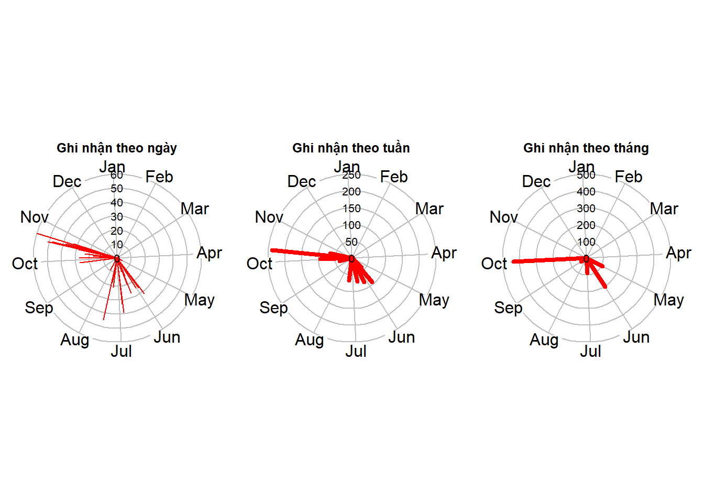
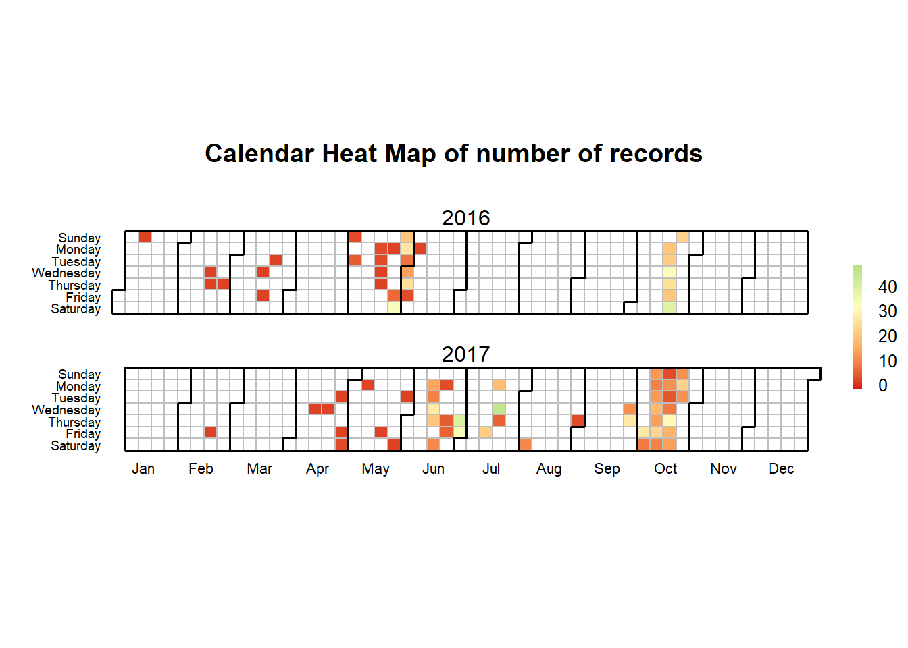
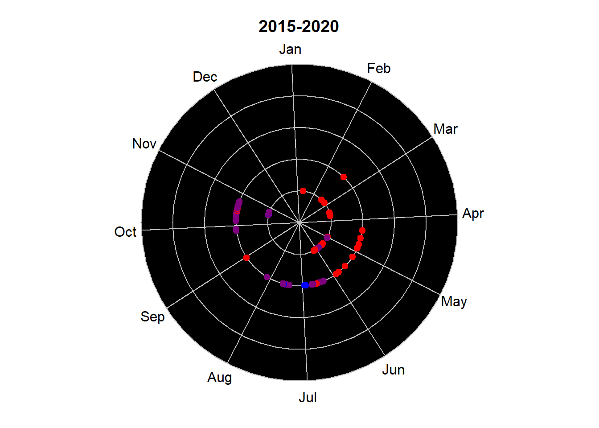
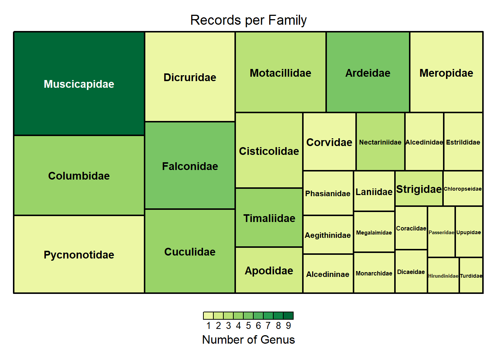
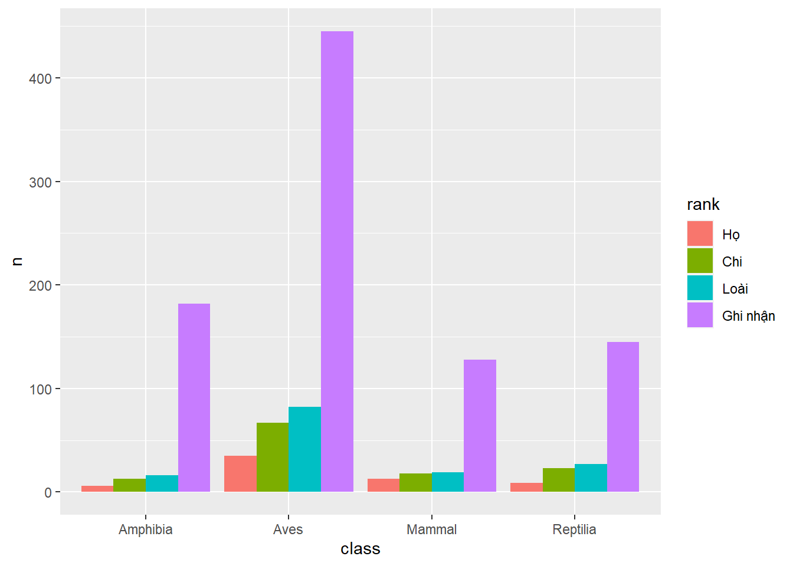
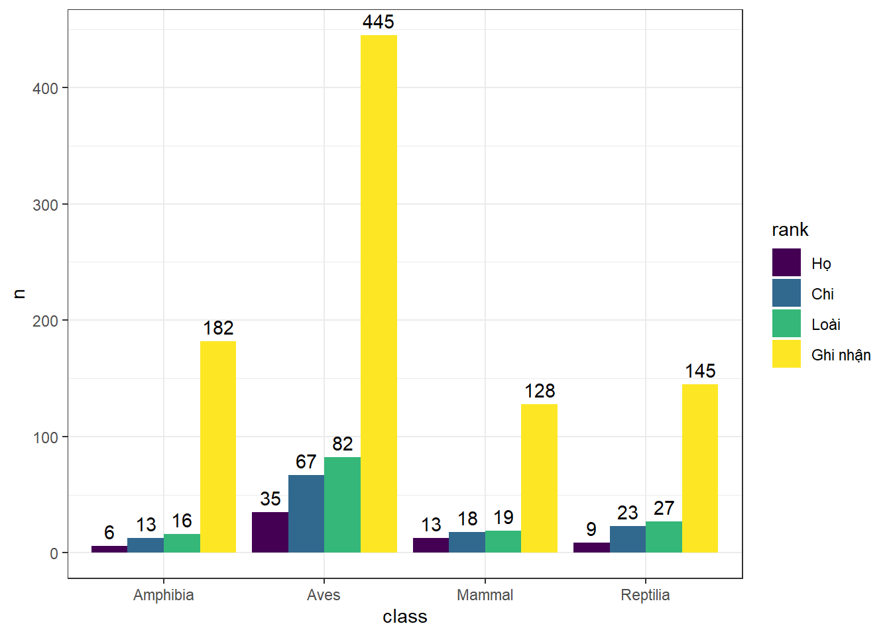
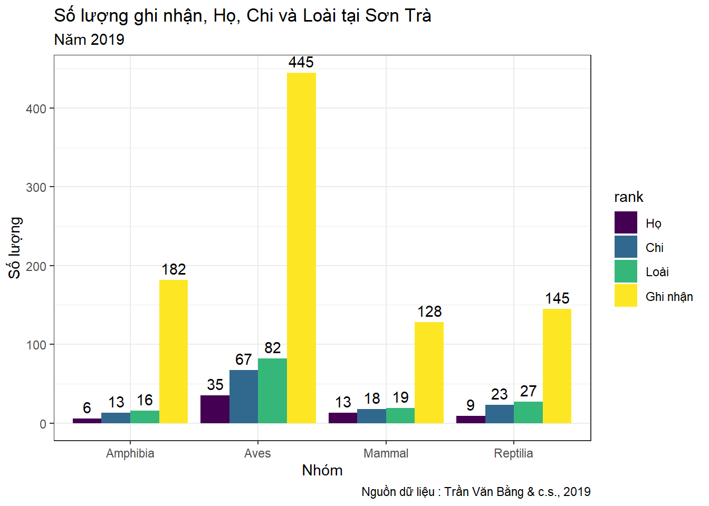

Chương 1 Thao tác cơ bản
1.1 Giới thiệu dữ liệu
Giới thiệu bộ dữ liệu Sơn Trà …
Tran BV, Le D, Hoang HQ, Hoang DM (2019) Occurrence data of terrestrial vertebrates of Son Tra Peninsula, Da Nang City, Vietnam. Biodiversity Data Journal 7: e39233. https://doi.org/10.3897/BDJ.7.e39233
1.2 Mở dữ liệu
Sử dụng lệnh read_csv() của gói readr để mở tập tin "*.csv" đã tải từ nguồn trên và lưu với tên “sontra”
sontra <- readr::read_csv("data/occurrence_SonTra_Peninsula_final.csv")1.3 Thao tác cơ bản trên dữ liệu
Có nhiều package trong R dành cho việc thao tác trên dữ liệu dạng bảng. Trong sách này chúng ta sử dụng gói dplyr một phần của hệ sinh thái tidyverse cho nội dung này.
library(dplyr)1.3.1 Xem số lượng dòng và cột
Đếm số lượng dòng và cột của bảng đơn giản với lệnh dim(). Ta được kết quả với 900 hàng và 34 cột.
Hoặc ta có thể sử dụng nrow() cho việc đếm số lượng dòng, và ncol() để đếm số lượng cột.
dim(sontra)## [1] 900 34nrow(sontra)## [1] 900ncol(sontra)## [1] 34Ta có thể xem danh sách tên cột của bảng với lệnh colnames():
colnames(sontra)## [1] "occurrenceID" "basisOfRecord"
## [3] "eventDate" "year"
## [5] "month" "day"
## [7] "verbatimEventDate" "scientificName"
## [9] "kingdom" "phylum"
## [11] "class" "order"
## [13] "family" "genus"
## [15] "specificEpithet" "taxonRank"
## [17] "scientificNameAuthorship" "identifiedBy"
## [19] "dateIdentified" "decimalLatitude"
## [21] "decimalLongitude" "geodeticDatum"
## [23] "verbatimCoordinateSystem" "continent"
## [25] "country" "countryCode"
## [27] "stateProvince" "county"
## [29] "locality" "language"
## [31] "institutionCode" "collectionCode"
## [33] "individualCount" "preparations"1.3.2 Ký hiệu Pipes %>%
Trước khi xem các phần tiếp theo, chúng ta cần hiểu ký hiệu %>%. Đây là một phong cách viết mã trong hệ sinh thái tidyverse. Sử dụng ký hiệu %>% giúp trình bày rõ ràng hơn các đoạn mã dài có chứa nhiều lệnh nối tiếp nhau. Kết quả phần bên trái ký hiệu sẽ được xem là tham số đầu tiên của lệnh tiếp theo ở bên phải ký hiệu.
Ví dụ: Để đếm số dòng và cột của bộ dữ liệu Sơn Trà ở trên ta phải sử dụng 2 thao tác với 2 lệnh khác nhau
sontra <- readr::read_csv("data/occurrence_SonTra_Peninsula_final.csv")
dim(sontra)
# hoặc
dim(readr::read_csv("data/occurrence_SonTra_Peninsula_final.csv"))Ta có thể sử dụng %>% để trình bày trật tự của đoạn mã như sau:
readr::read_csv("data/occurrence_SonTra_Peninsula_final.csv") %>%
dim()## [1] 900 341.3.3 Lọc dữ liệu theo cột
Bảng dữ liệu này chứa nhiều trường thông tin mà chúng ta chưa cần sử dụng. Ta có thể tạo một bảng khác chỉ chứa một số cột mà chúng ta quan tâm với lệnh select(). Ta thực hiện việc chọn một số cột và lưu vào bảng “sontra2” như sau:
sontra2 <- sontra %>%
select(class, order, family, genus, scientificName, year)
dim(sontra2)## [1] 900 6Xem n dòng đầu tiên của bảng với lệnh head()
sontra2 %>% head(n = 5)| class | order | family | genus | scientificName | year |
|---|---|---|---|---|---|
| Mammal | Carnivora | Herpestidae | Herpestes | Herpestes javanicus (É. Geoffroy Saint-Hilaire, 1818) | 2016 |
| Mammal | Carnivora | Herpestidae | Herpestes | Herpestes javanicus (É. Geoffroy Saint-Hilaire, 1818) | 2016 |
| Mammal | Carnivora | Herpestidae | Herpestes | Herpestes javanicus (É. Geoffroy Saint-Hilaire, 1818) | 2017 |
| Mammal | Carnivora | Herpestidae | Herpestes | Herpestes javanicus (É. Geoffroy Saint-Hilaire, 1818) | 2017 |
| Mammal | Carnivora | Herpestidae | Herpestes | Herpestes javanicus (É. Geoffroy Saint-Hilaire, 1818) | 2017 |
Bên cạnh việc nhập các tên cột, thì chúng ta có thể nhập theo một số cách sau:
# Lấy từ cột "class" đến cột "genus"
sontra %>% select(class:genus) %>% head(5)| class | order | family | genus |
|---|---|---|---|
| Mammal | Carnivora | Herpestidae | Herpestes |
| Mammal | Carnivora | Herpestidae | Herpestes |
| Mammal | Carnivora | Herpestidae | Herpestes |
| Mammal | Carnivora | Herpestidae | Herpestes |
| Mammal | Carnivora | Herpestidae | Herpestes |
# Lấy từ cột thứ 11 đến cột thứ 14
sontra %>% select(11:14) %>% head(5)| class | order | family | genus |
|---|---|---|---|
| Mammal | Carnivora | Herpestidae | Herpestes |
| Mammal | Carnivora | Herpestidae | Herpestes |
| Mammal | Carnivora | Herpestidae | Herpestes |
| Mammal | Carnivora | Herpestidae | Herpestes |
| Mammal | Carnivora | Herpestidae | Herpestes |
# Lấy 6 cột đầu tiên nhưng trừ cột "eventDate"
sontra %>%
select(1:6) %>%
select(-eventDate) %>%
head(5)| occurrenceID | basisOfRecord | year | month | day |
|---|---|---|---|---|
| B8945C0B-CB16-DC6E-B1E5-8C19749A44CC | HumanObservation | 2016 | 5 | 31 |
| A9EB56E6-AA5C-C711-8CBE-A9EC25469327 | HumanObservation | 2016 | 10 | 20 |
| A98E0AEC-3412-60E7-AC12-E4626E91D1D7 | HumanObservation | 2017 | 10 | 24 |
| 346612CE-7D29-BBC3-A5FA-84389D264AA9 | HumanObservation | 2017 | 10 | 21 |
| B6537E98-E244-BCBC-9337-5C892F77B495 | HumanObservation | 2017 | 10 | 7 |
# Lấy tất cả các cột bắt đầu bởi ký tự nào đó
sontra %>% select(starts_with("c")) %>% head(5)| class | continent | country | countryCode | county | collectionCode |
|---|---|---|---|---|---|
| Mammal | Asia | Vietnam | VN | Son Tra | SIEZC |
| Mammal | Asia | Vietnam | VN | Son Tra | SIEZC |
| Mammal | Asia | Vietnam | VN | Son Tra | SIEZC |
| Mammal | Asia | Vietnam | VN | Son Tra | SIEZC |
| Mammal | Asia | Vietnam | VN | Son Tra | SIEZC |
# Lấy tất cả các cột có chứa ký tự nào đó
sontra %>% select(contains("Code")) %>% head(5)| countryCode | institutionCode | collectionCode |
|---|---|---|
| VN | SIE | SIEZC |
| VN | SIE | SIEZC |
| VN | SIE | SIEZC |
| VN | SIE | SIEZC |
| VN | SIE | SIEZC |
1.3.4 Trích lọc theo dòng trong bảng.
Để trích lọc thông tin theo dòng trong bảng ta sử dụng lệnh filter() kết hợp với các ký hiệu điều kiện như sau:
- x < y: nhỏ hơn
- x > y: lớn hơn
- x == y: bằng hoặc giống
- x <= y: nhỏ hơn hoặc bằng
- y >= y: lớn hơn hoặc bằng
- x != y: khác
- x %in% y: là một phần tử trong
- is.na(x): là NA
- !is.na(x): không là NA
Ví dụ: Ta cần lọc ra các dòng chứa thông tin của nhóm thú (Mammal) dựa trên cột “class” của bảng.
sontra2 %>% filter(class == "Mammal") Kết quả ta thấy có 128 dòng chứa thông tin cho nhóm Thú.
Ví dụ: Lọc ra các ghi nhận của cả hai nhóm lưỡng cư (Amphibia) và bò sát (Reptilia). Ta kết hợp thêm lệnh %in% trong hàm filter() như sau:
sontra2 %>% filter(class %in% c("Reptilia", "Amphibia"))Kết quả ta có 327 dòng chứa thông tin về hai nhóm Lưỡng cư và Bò sát trong bộ dữ liệu.
Ta cũng có thể sử dụng ký hiệu & (Và), | (Hoặc) để đưa thêm vào các điều kiện lọc khác.
Ví dụ ta cần quan tâm đến các ghi nhận của Lưỡng cư và Bò sát trong năm 2016:
sontra2 %>%
filter(class %in% c("Reptilia", "Amphibia") & year == 2016)1.3.5 Sắp xếp dữ liệu
Ta có thể sử dụng lệnh arrange() để sắp xếp dữ liệu dựa trên các cột mà mình cần. Khi đó các dòng sẽ được sắp theo trật tự bảng chữ cái đối với chữ và từ nhỏ đến lớn đối với số.
Ví dụ: sắp bảng theo trật tự bảng chữ cái các Chi ở cột “genus”:
sontra2 %>%
filter(class %in% c("Reptilia", "Amphibia") & year == 2016) %>%
arrange(genus)Nếu muốn đảo chiều ta kết hợp thêm lệnh desc() như sau:
sontra2 %>%
filter(class %in% c("Reptilia", "Amphibia") & year == 2016) %>%
arrange(desc(genus))1.4 Thống kê số lượng
1.4.1 dplyr
Để đếm số lượng ghi nhận, số lượng họ, chi và loài trong bộ dữ liệu ta có thể sử dụng lệnh summarise() với cú pháp như sau:
lưu ý: lệnh n() để đếm tổng số dòng, còn n_distinct() để đếm số dòng có giá trị khác nhau trong một cột nào đó.
sontra %>%
summarise(
tong_so_ho = n_distinct(family),
tong_so_chi = n_distinct(genus),
tong_so_loai = n_distinct(scientificName),
tong_so_ghi_nhan = n()
)| tong_so_ho | tong_so_chi | tong_so_loai | tong_so_ghi_nhan |
|---|---|---|---|
| 63 | 121 | 144 | 900 |
Kết quả ta thấy trong bộ dữ liệu có tổng cộng 900 ghi nhận của 144 loài, 121 chi và 63 họ.
Nếu chúng ta muốn thống kê tương tự nhưng cho từng nhóm Thú, Lưỡng cư, Bò sát và Chim thì kết hợp thêm lệnh group_by() như sau:
sontra %>%
group_by(class) %>%
summarise(tong_so_ho = n_distinct(family),
tong_so_chi = n_distinct(genus),
tong_so_loai = n_distinct(scientificName),
tong_so_ghi_nhan = n())| class | tong_so_ho | tong_so_chi | tong_so_loai | tong_so_ghi_nhan |
|---|---|---|---|---|
| Amphibia | 6 | 13 | 16 | 182 |
| Aves | 35 | 67 | 82 | 445 |
| Mammal | 13 | 18 | 19 | 128 |
| Reptilia | 9 | 23 | 27 | 145 |
Số lượng ghi nhận, loài chi họ đã được đếm theo từng nhóm.
Bên cạnh đó ta cũng có thể sử dụng lênh count() để đếm số ghi nhận theo nhóm động vật như sau:
sontra %>% count(class)| class | n |
|---|---|
| Amphibia | 182 |
| Aves | 445 |
| Mammal | 128 |
| Reptilia | 145 |
Hoặc kết hợp hàm arrange() và top_n() để tìm 5 loài có số ghi nhận nhiều nhất
sontra %>%
count(scientificName) %>%
arrange(desc(n)) %>%
top_n(n = 5)| scientificName | n |
|---|---|
| Fejervarya limnocharis (Gravenhorst, 1829) | 75 |
| Pygathrix nemaeus (Linnaeus, 1771) | 35 |
| Limnonectes poilani (Bourret, 1942) | 29 |
| Cyrtodactylus pseudoquadrivirgatus Rösler, Nguyen, Vu, Ngo & Ziegler, 2008 | 28 |
| Physignathus cocincinus Cuvier, 1829 | 22 |
Kết quả loài Fejervarya limnocharis (Gravenhorst, 1829) được ghi nhận nhiều nhất, lên đến 75 lần.
1.4.2 bdvis
#remotes::install_github("vijaybarve/bdvis")
library(bdvis)Để sử dụng các lệnh từ gói bdvis, ta cần phải đổi tên một số cột quan trọng của bảng sontra liên quan đến tên khoa học, thời gian và tọa độ ghi nhận đồng thời chuyển định dạng sang định dạng bảng của gói này với lệnh format_bdvis().
sontra_bdvis <- sontra %>%
rename(
"Latitude" = "decimalLatitude",
"Longitude" = "decimalLongitude",
"Date_collected" = "eventDate",
"Scientific_name" = "scientificName",
"Family" = "family",
"Genus" = "genus") %>%
format_bdvis()Khi đó để thống kê số lượng ta gọi lệnh bdsummary(). Kết quả sẽ trả về số ghi nhận, số lượng Họ, Chi, Loài, thời gian ghi nhận trong bộ dữ liệu.
bdsummary(sontra_bdvis) ##
## Total no of records = 900
##
## Temporal coverage...
## Date range of the records from 2016-01-10 to 2017-10-24
##
## Taxonomic coverage...
## No of Families : 63
## No of Genus : 121
## No of Species : 144
##
## Spatial coverage ...
## Bounding box of records 16.063 , 108.16 - 16.1535 , 108.3361
## Degree celles covered : 1
## % degree cells covered : InfTa cũng có thể xem thông tin cho các ghi nhận về nhóm Thú như sau:
sontra_bdvis %>%
filter(class == "Mammal") %>%
bdsummary()##
## Total no of records = 128
##
## Temporal coverage...
## Date range of the records from 2016-05-28 to 2017-10-24
##
## Taxonomic coverage...
## No of Families : 13
## No of Genus : 18
## No of Species : 19
##
## Spatial coverage ...
## Bounding box of records 16.063 , 108.16 - 16.152 , 108.3361
## Degree celles covered : 1
## % degree cells covered : Inf1.5 Biểu đồ
1.5.1 Vẽ nhanh một số biểu đồ với gói bdvis
1.5.1.1 Số lượng ghi nhận theo ngày, tuần, tháng trong năm
par(mfrow = c(1,3))
tempolar(sontra_bdvis, color="red", title="Ghi nhận theo ngày", plottype="r", timescale="d")
tempolar(sontra_bdvis, color="red", title="Ghi nhận theo tuần", plottype="r", timescale="w")
tempolar(sontra_bdvis, color="red", title="Ghi nhận theo tháng", plottype="r", timescale="m") 
1.5.1.2 Calendarheat
Biểu đồ thể hiện số lượng ghi nhận theo ngày. Trong đó mỗi ô vuông là 1 ngày, màu sắc của ô thể hiện số lượng ghi nhận từ ít đến nhiều theo gam màu từ đỏ đến xanh lá.
bdcalendarheat(sontra_bdvis)
1.5.1.3 Chronohorogram - Số lượng ghi nhận tháng và năm
Biểu đồ này thể hiện số lượng ghi nhận theo tháng và năm. Ta có thể quy định năm bắt đầu và năm kết thúc sự theo dõi. Khi đó tâm đồ thị thể hiện cho năm bắt đầu, sau đó mỗi năm tiếp theo được thể hiện bởi 1 vòng tròn. Một điểm thể hiện cho một ngày ghi nhận dữ liệu. Màu sắc mặc định được thể hiện số ghi nhận trong ngày từ ít đến nhiều bằng gam màu từ xanh dương đến đỏ.
chronohorogram2 <- function (indf = NA, title = "Chronohorogram", startyear = 1980,
endyear = NA, colors = c("red", "blue"), ptsize = 1)
{
if (!is.element("Date_collected", names(indf))) {
stop("Field Date_collected not found in dataset \n")
}
if (is.na(endyear)) {
endyear = as.integer(format(Sys.Date(), "%Y"))
}
dat1 = sqldf::sqldf("select Date_collected, count(*) as ct from indf group by Date_collected")
if (is.na(dat1$Date_collected[1])) {
dat1 = dat1[2:dim(dat1)[1], ]
}
if (as.character(dat1$Date_collected[1]) == "") {
dat1 = dat1[2:dim(dat1)[1], ]
}
d = as.numeric(strftime(as.Date(dat1$Date_collected, na.rm = T),
format = "%j"))
y = as.numeric(strftime(as.Date(dat1$Date_collected, na.rm = T),
format = "%Y"))
rind = which(y <= endyear & y >= startyear)
d = d[rind]
y = y[rind]
crp = colorRampPalette(colors)(round(log10(max(dat1$ct) +
2)) + 1)
plotrix::radial.plot(y, (d/366) * 6.28319, rp.type = "s", start = 1.62,
labels = month.abb, clockwise = TRUE,
point.col = crp[(round(log10(dat1[,2]) + 2)) - 1],
point.symbols = 20, grid.bg = "black",
radial.lim = c(startyear, endyear), cex=ptsize,
show.radial.grid = T, show.grid.labels = F, show.grid = T,
main = title)
}chronohorogram2(sontra_bdvis,
startyear = 2015,
endyear = 2020,
ptsize = 1.5,
title = "2015-2020")
1.5.1.4 Số lượng ghi nhận theo họ với treemap
Kích thước của từng ô tương ứng với số lượng ghi nhận. Màu sắc của ô thể hiện số lượng Chi của Họ. Ví dụ vẽ nhanh số lượng ghi nhận theo các Họ cho nhóm Chim
sontra_bdvis %>%
filter(class == "Aves") %>%
taxotree()
1.5.2 GGPLOT2
df_soluong <- sontra %>%
group_by(class) %>%
summarise(Ho = n_distinct(family),
Chi = n_distinct(genus),
Loai = n_distinct(scientificName),
Ghi_nhan = n())
df_soluong| class | Ho | Chi | Loai | Ghi_nhan |
|---|---|---|---|---|
| Amphibia | 6 | 13 | 16 | 182 |
| Aves | 35 | 67 | 82 | 445 |
| Mammal | 13 | 18 | 19 | 128 |
| Reptilia | 9 | 23 | 27 | 145 |
df_soluong <- df_soluong %>%
tidyr::pivot_longer (-class, names_to = "rank", values_to = "n")
df_soluong| class | rank | n |
|---|---|---|
| Amphibia | Ho | 6 |
| Amphibia | Chi | 13 |
| Amphibia | Loai | 16 |
| Amphibia | Ghi_nhan | 182 |
| Aves | Ho | 35 |
| Aves | Chi | 67 |
| Aves | Loai | 82 |
| Aves | Ghi_nhan | 445 |
| Mammal | Ho | 13 |
| Mammal | Chi | 18 |
| Mammal | Loai | 19 |
| Mammal | Ghi_nhan | 128 |
| Reptilia | Ho | 9 |
| Reptilia | Chi | 23 |
| Reptilia | Loai | 27 |
| Reptilia | Ghi_nhan | 145 |
library(ggplot2)df_soluong <- df_soluong %>%
mutate(rank = factor(rank,
levels = c("Ho","Chi","Loai","Ghi_nhan"),
labels = c("Họ","Chi","Loài","Ghi nhận")))df_soluong %>%
ggplot(aes(x = class, y=n, fill = rank)) +
geom_col(position = 'dodge')
gg <- df_soluong %>%
ggplot(aes(x = class, y=n, fill = rank)) +
geom_col(position = position_dodge()) +
geom_text(aes(x = class, y=n, label = n ),
position = position_dodge(width = 0.9),
vjust = -0.5) +
scale_fill_viridis_d() +
theme_bw()
gg
gg +
labs(title = "Số lượng ghi nhận, Họ, Chi và Loài tại Sơn Trà",
subtitle = "Năm 2019",
x = "Nhóm", y = "Số lượng",
caption = "Nguồn dữ liệu : Trần Văn Bằng & c.s., 2019")